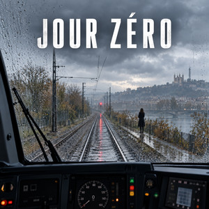

LE ROMAN AUDIO
Jour
zéro.
Antoine Verne, conducteur de TER, revit sans cesse le mardi 3 novembre. À 7 h 42, une femme apparaît sur les rails. Chaque boucle le rapproche de la vérité, mais menace d’effacer un souvenir de sa femme, Hélène. Un thriller audio en dix épisodes, entre mystère, deuil et seconde chance.

Couverture du show sur Spotify
LE SHOW
Chaque boucle le rapproche de la vérité.
Un thriller audio en dix épisodes, entre mystère, deuil et seconde chance.
ÉCOUTER
Le show sur Spotify
Le lecteur ne s’affiche pas ? Écouter directement sur Spotify.